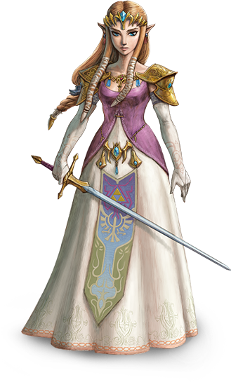
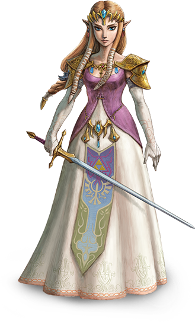
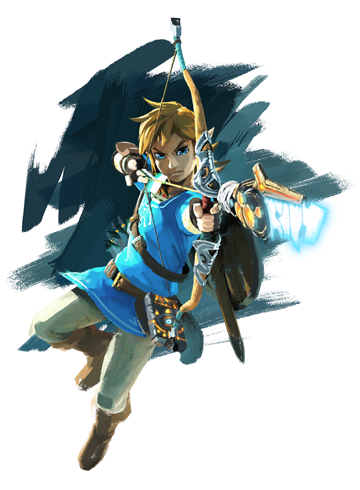

About The Legend of Zelda

The Legend of Zelda is a high fantasy action-adventure video game franchise created by Japanese game designers Shigeru Miyamoto and Takashi Tezuka. It is primarily developed and published by Nintendo, although some portable installments and re-releases have been outsourced to Capcom, Vanpool, and Grezzo. The gameplay incorporates action-adventure and elements of action RPG games.
The series centers on the various incarnations of Link, a courageous young Hylian man, with pointy elf-like ears; and Princess Zelda, a magical princess that is the mortal reincarnation of the goddess Hylia; as they fight to save the magical land of Hyrule from Ganon, an evil warlord turned demon king, who is the principal antagonist of the series. Ganon wishes to use the Triforce, a sacred relic left behind by the three goddesses that created Hyrule to remake the world in his own dark image. When gathered together, the power of the Triforce can grant any wish it's user desires, however if someone with a heart that does not possess a balance of the three virtues of Power, Courage and Wisdom attempts to touch the Triforce it will split into three triangles and bond with three people who's hearts embody the required virtue.
Although their personalities and backstory differ from game to game, the incarnations of Link and Zelda often have many traits in common; such as Link often being left-handed and associated with the color green while Princess Zelda is often a member of the royal family. While the conflict with Ganon serves as a backbone for the series, some games have featured other settings and antagonists, with Link traveling or being sent to these other lands in their time of need.
Since the original Legend of Zelda was released in 1986, the series has expanded to include 19 entries on all of Nintendo's major game consoles, as well as a number of spin-offs. An American animated TV series based on the games aired in 1989 and individual manga adaptations commissioned by Nintendo have been produced in Japan since 1997. The Legend of Zelda is one of Nintendo's most prominent and successful franchises; several of its entries are considered to be among the greatest video games of all time.
| Game | Publication Date | Units Sold (in millions) |
|---|---|---|
| The Legend of Zelda | 1986 | 6.51 |
| Ocarina of Time | 1998 | 13.82 |
| Majora's Mask | 2000 | 6.64 |
| Twilight Princess | 2006 | 9.98 |
| Breath of the Wild | 2017 | 21.43 |